# load the tidyverse
library(tidyverse)
# read in the growth data
growth_data <- read_tsv("data/Growth_Data.txt", show_col_types = FALSE)8 Statistics in R
WarningWork in progress
This chapter was recently updated to new example datasets. The code runs, but the explanations of the results are drafts that are still being checked. Please read the interpretations with care.
A lot of helpful information that was used here was inspired by a more detailed site that can be found here
And please take note, that the writer of this tutorial is no statistician and if you spot issues feel free to let me know!
As in the chapter “Working with the tidyverse”, we load the tidyverse and read our growth data. show_col_types = FALSE hides the message about the column types, because we already checked them in that chapter.
8.1 Summary stats
To do some basic stats we use the growth data set.
mean()= print the mean of a certain columnsummary()= print the mean, median, max, min, … of a certain column.
#get the mean of our root length
mean(growth_data$Rootlength)[1] NAThe result is NA. Our root length column contains missing values, and the mean of a list of numbers that contains a missing value is unknown. With the argument na.rm = TRUE (“NA remove”), mean() ignores the missing values. Many other functions, such as sd(), median() or sum(), have the same argument.
#get the mean of our root length, ignoring missing values
mean(growth_data$Rootlength, na.rm = TRUE)[1] 75.19195#return summary stats for the root length
summary(growth_data$Rootlength) Min. 1st Qu. Median Mean 3rd Qu. Max. NA's
28.73 56.60 75.64 75.19 92.25 135.49 15 We can also summarize data of several columns
#return summary stats for the root length and the shoot weight
growth_data |>
select(Rootlength, FW_shoot_mg) |>
summary() Rootlength FW_shoot_mg
Min. : 28.73 Min. : 1.56
1st Qu.: 56.60 1st Qu.:12.10
Median : 75.64 Median :15.20
Mean : 75.19 Mean :16.58
3rd Qu.: 92.25 3rd Qu.:19.63
Max. :135.49 Max. :47.60
NA's :15 NA's :8 We can also run summary() on our complete dataframe.
#run summary on all our data
summary(growth_data) Nutrient Condition Experiment Rootlength
Length:594 Length:594 Length:594 Min. : 28.73
Class :character Class :character Class :character 1st Qu.: 56.60
Mode :character Mode :character Mode :character Median : 75.64
Mean : 75.19
3rd Qu.: 92.25
Max. :135.49
NA's :15
FW_shoot_mg
Min. : 1.56
1st Qu.:12.10
Median :15.20
Mean :16.58
3rd Qu.:19.63
Max. :47.60
NA's :8 For number columns, summary() also tells us how many values are missing (NA's). For text columns, it only tells us how many values there are.
8.2 Summary statistics per group
A mean over all plants is not very informative, because our plants got different treatments. In the chapter “Working with the tidyverse” you learned how to count rows and summarize data per group. Let’s use this to get an overview of our experiment.
First, how many plants do we have per treatment?
#count the plants for each combination of nutrient and condition
growth_data |>
count(Nutrient, Condition)The groups have slightly different sizes. For this tutorial we can ignore this as the imbalance is small, but very different group sizes can matter for some statistical tests. Counting is also a quick way to spot samples with fewer measurements than you expected.
Now we calculate the mean, the standard deviation (sd) and the standard error (se) of the root length for each treatment:
#summary statistics of the root length per treatment
growth_summary <- growth_data |>
group_by(Nutrient, Condition) |>
summarize(mean_root = mean(Rootlength, na.rm = TRUE),
sd_root = sd(Rootlength, na.rm = TRUE),
n_plants = sum(!is.na(Rootlength)),
se_root = sd_root / sqrt(n_plants)) |>
ungroup()`summarise()` has grouped output by 'Nutrient'. You can override using the
`.groups` argument.growth_summaryThe standard deviation describes how much the root length varies between the plants of a group. The standard error of the mean is the standard deviation divided by the square root of the number of plants. It describes how precisely we know the mean of the group: the more plants we measure, the smaller it gets. Error bars in figures often show one of the two, so always say which one you use.
To see how different the two can be, let’s plot the same bar graph as in the plotting chapter twice: once with the sd and once with the se as error bars. We first make the bars without error bars and store them, and then add the two kinds of error bars. coord_cartesian(ylim = c(0, 120)) gives both plots the same y-axis, so that we can compare them:
library(ggpubr)
# the bars without error bars, with the same y-axis for both plots
bars <- ggplot(growth_summary, aes(x = Condition, y = mean_root, fill = Nutrient)) +
geom_col(position = position_dodge()) +
coord_cartesian(ylim = c(0, 120)) +
labs(y = "Root length (mm)")
# error bars with the standard deviation
sd_plot <- bars +
geom_errorbar(aes(ymin = mean_root - sd_root, ymax = mean_root + sd_root),
position = position_dodge(width = 0.9), width = 0.2) +
labs(title = "mean ± sd")
# error bars with the standard error
se_plot <- bars +
geom_errorbar(aes(ymin = mean_root - se_root, ymax = mean_root + se_root),
position = position_dodge(width = 0.9), width = 0.2) +
labs(title = "mean ± se")
ggarrange(sd_plot, se_plot, ncol = 2, common.legend = TRUE, legend = "bottom")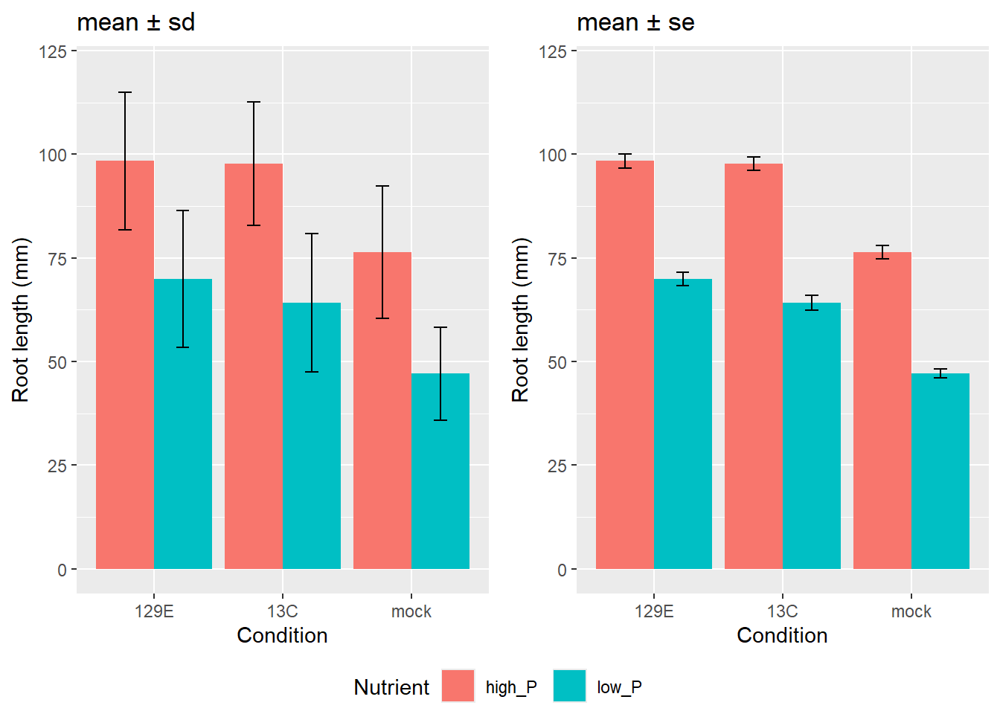
It is exactly the same data, but the se bars are about ten times shorter than the sd bars. The reason is the number of plants: with 85 to 105 plants per group, the standard deviation is divided by about 10 (the square root of 100). The plants within a group still vary a lot in root length (the sd is between 11 and 17 mm), but we know the mean of each group quite precisely (the se is below 2 mm).
So what small error bars tell you depends on what they show. Small sd bars mean that the plants within a group are similar. Small se bars only mean that the mean is known precisely, and that can come from similar plants, from many plants, or from both. This is why a figure legend must always say which one is shown.
Which one should you use? It depends on what your reader should see. If you want to show how variable your plants are, use the sd. If you want to compare groups, for example a treatment with the control, the se or a 95% confidence interval is usually more appropriate, because they show how precisely you know each mean (Cumming, Fidler, and Vaux 2007). Don’t choose the se only because the bars look smaller. And don’t read se bars that do not overlap as a significant difference: that is a common mistake (Krzywinski and Altman 2013). Whatever you use, write it in the figure legend together with the number of plants per group, and with small groups, show the individual data points instead.
Note that inside summarize(), you can use the columns you made earlier in the same summarize(): se_root uses sd_root and n_plants.
Other useful functions inside summarize():
mean(): the sum of all values divided by their numbermedian(): 50% of the values are above and 50% below this valuesd(): the standard deviationIQR(): the interquartile range, the range of the middle 50% of the values. It is less sensitive to outliers than the standard deviationmin(),max(): the smallest and largest valuequantile(x, 0.25): 25% of the values are below this valuen(): the number of rows in the groupsum(!is.na(x)): the number of values that are not missingn_distinct(x): the number of different valuessum(x > 10): the number of values larger than 10mean(x > 10): the proportion of values larger than 10
In other people’s code, you will also see other ways to do the same, for example the base R functions table() to count and tapply() to calculate a mean per group, or ddply() from the older package plyr.
8.3 Linear models
8.3.1 Basics
It is very simple to investigate linear relationships among variables in R. We want to estimate how a quantitative dependent variable changes according to the levels of one or more categorical independent variables. In the command below, the linear relationship between Rootlength (the dependent variable, i.e. the one we’re trying to predict) and FW_shoot_mg (the independent variable or the predictor) is calculated.
We need to use the function summary to see the results of that command; coef extracts the best-fit coefficients, anova performs an analysis of variance; there are many other extractor functions.
#is there a correlation between freshweight and root length?
linearmodel <- lm(Rootlength ~ FW_shoot_mg, data = growth_data)
linearmodel
Call:
lm(formula = Rootlength ~ FW_shoot_mg, data = growth_data)
Coefficients:
(Intercept) FW_shoot_mg
45.471 1.782 #let's extract the entire t-table
summary(linearmodel)
Call:
lm(formula = Rootlength ~ FW_shoot_mg, data = growth_data)
Residuals:
Min 1Q Median 3Q Max
-59.467 -16.619 1.126 13.202 50.139
Coefficients:
Estimate Std. Error t value Pr(>|t|)
(Intercept) 45.4713 2.2970 19.80 <2e-16 ***
FW_shoot_mg 1.7818 0.1279 13.94 <2e-16 ***
---
Signif. codes: 0 '***' 0.001 '**' 0.01 '*' 0.05 '.' 0.1 ' ' 1
Residual standard error: 20.64 on 569 degrees of freedom
(23 observations deleted due to missingness)
Multiple R-squared: 0.2544, Adjusted R-squared: 0.2531
F-statistic: 194.2 on 1 and 569 DF, p-value: < 2.2e-16Here one of the values is the model p-Value (bottom last line) and the p-Value of individual predictor variables (extreme right column under ‘Coefficients’). The p-Values are very important because, we can consider a linear model to be statistically significant only when both these p-Values are less that the pre-determined statistical significance level, which is ideally 0.05. This is visually interpreted by the significance stars at the end of the row. The more the stars beside the variable’s p-Value, the more significant the variable.
- Residuals: The section summarizes the residuals, the error between the prediction of the model and the actual results. Smaller residuals are better.
- Coefficients: For each variable and the intercept, a weight is produced and that weight has other attributes like the standard error, a t-test value and significance.
- Estimate: This is the weight given to the variable. In the simple regression case (one variable plus the intercept), it tells you by how much the root length changes, according to the model, for every increase of the shoot fresh weight by 1 mg. In our data, the estimate is 1.78: for every additional mg of shoot fresh weight, the model predicts a root that is 1.78 mm longer.
lm() automatically leaves out all plants with a missing root length or a missing shoot weight. You can see how many it removed in the line “observations deleted due to missingness” of the summary. * Std. Error: Tells you how precisely was the estimate measured. It’s really only useful for calculating the t-value. * t-value and Pr(>[t]): The t-value is calculated by taking the coefficient divided by the Std. Error. It is then used to test whether or not the coefficient is significantly different from zero. If it isn’t significant, then the coefficient really isn’t adding anything to the model and could be dropped or investigated further. Pr(>|t|) is the significance level.
Performance Measures:
Three sets of measurements are provided.
- Residual Standard Error: This is the standard deviation of the residuals. Smaller is better.
- Multiple / Adjusted R-Square: For one variable, the distinction doesn’t really matter. R-squared shows the amount of variance explained by the model. Adjusted R-Square takes into account the number of variables and is most useful for multiple-regression.
- F-Statistic: The F-test checks if at least one variable’s weight is significantly different than zero. This is a global test to help asses a model. If the p-value is not significant (e.g. greater than 0.05) than your model is essentially not doing anything.
We also can just print parts of the data:
#print only the coefficients
coef(summary(linearmodel)) Estimate Std. Error t value Pr(>|t|)
(Intercept) 45.471292 2.2969633 19.79626 9.470283e-67
FW_shoot_mg 1.781836 0.1278697 13.93478 3.480146e-38#print only the anova stats
anova(linearmodel)#plot the data and add the line of the model
plot(Rootlength ~ FW_shoot_mg, data = growth_data)
abline(linearmodel, col = "red")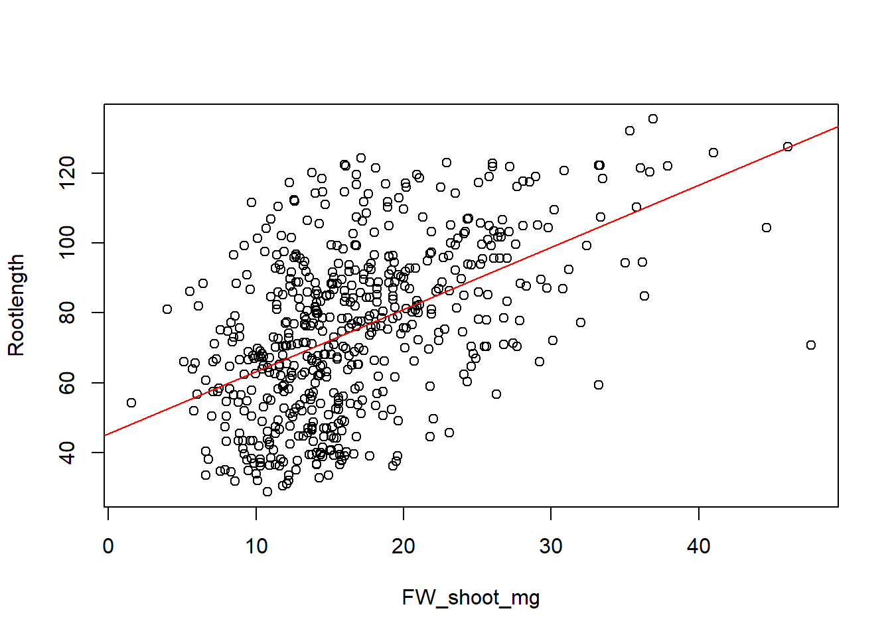
If we look at the stats and the p value we see a decent correlation. However, since we tested different nutrient conditions it also can be useful to separate data to get a clearer picture. Something else to consider is to ask whether the data is normally distributed and based on that what statistical test to choose.
#color the points by nutrient condition to check this
plot(Rootlength ~ FW_shoot_mg, data = growth_data, col = factor(Nutrient))
legend("topleft", legend = c("high_P", "low_P"), col = 1:2, pch = 1)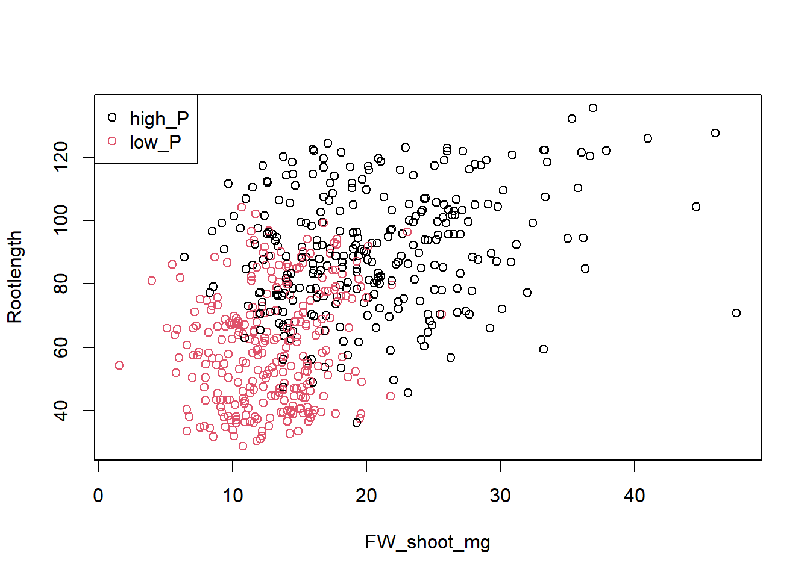
col = factor(Nutrient) gives each nutrient level its own color: the first level gets color 1 (black), the second color 2 (red). Remember from the chapter “Data objects” that the levels are sorted alphabetically, so high_P is black and low_P is red. The legend has to list them in the same order.
8.3.2 Analysing residuals
Anyone can fit a linear model in R. The real test is to look at the residuals: the differences between the measured root lengths and the root lengths that the model predicts. The predicted values are called the fitted values. If the model describes the data well, the residuals:
- are spread evenly around 0, without a pattern
- have about the same spread for all fitted values (the variance is constant)
- follow a normal distribution
- are independent of each other, i.e. one plant does not influence another. You can’t see this in a plot; it depends on how the experiment was set up.
When you use plot() on a model, R draws diagnostic plots that help you check this. The number says which plot you want. We use the same plots later for the ANOVA.
Residuals versus fitted values
plot(linearmodel, 1)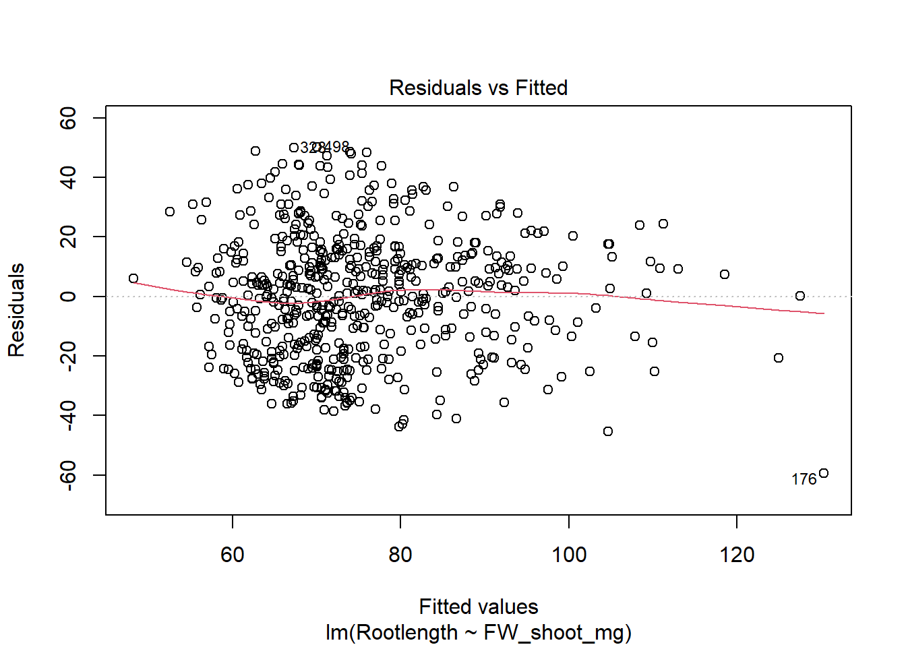
Each point is one plant. The x-axis shows the root length that the model predicts, the y-axis the residual. The dotted line marks 0, and the red line follows the average residual from left to right. Look for two things:
- If the red line clearly bends, for example like a U, the relationship between shoot weight and root length is not a straight line.
- If the points spread out like a funnel, wider on one side than on the other, the variance is not constant.
R labels the three most extreme points with their row number. In our plot, the points are scattered around 0 without a clear curve, and the red line stays close to 0. It only bends down on the right, where there are few plants. Plant 176 has the largest negative residual: it is the plant with the heaviest shoot (47.6 mg) that you found in the chapter “Working with the tidyverse”. The model predicts a root length of about 130 mm for it, but its root is only 70.8 mm long.
Histogram of the residuals
resid() takes the residuals out of the model, so we can draw a histogram of them:
hist(resid(linearmodel), main = "Histogram of the residuals", xlab = "Residuals")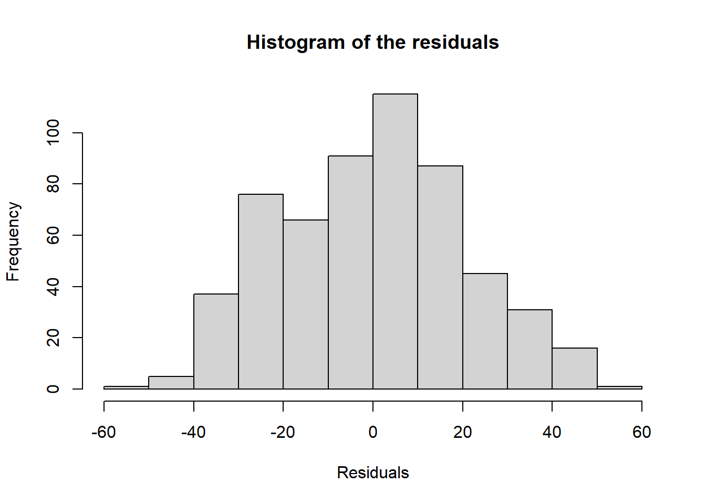
If the residuals follow a normal distribution, the histogram looks roughly like a bell curve around 0. Ours does.
Q-Q plot of the residuals
plot(linearmodel, 2)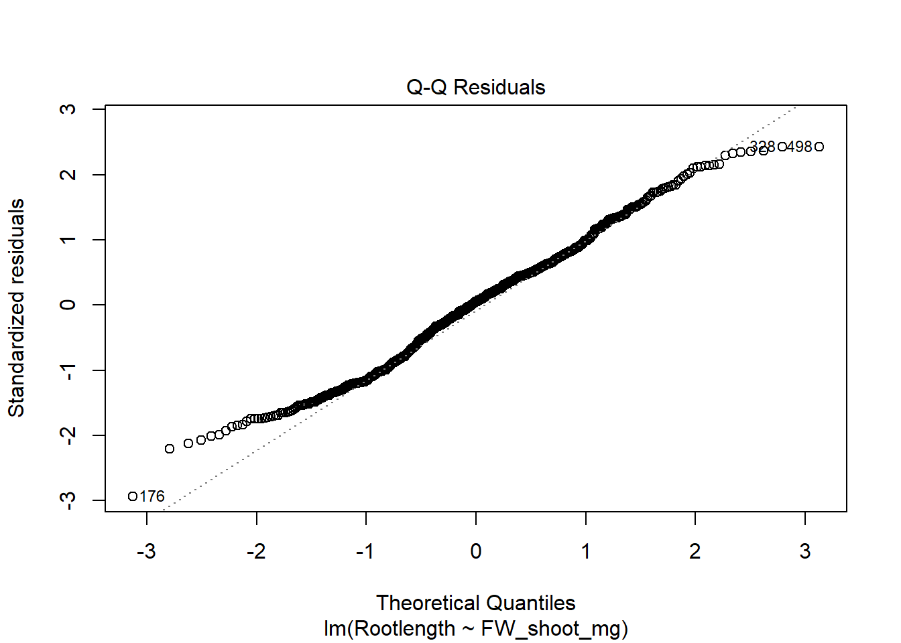
If the residuals follow a normal distribution, the points lie on the dotted line. In our plot, the middle part follows the line well. At both ends, the points bend away from the line towards 0: the largest residuals are smaller than we would expect from a normal distribution. So our data has fewer extreme values than a normal distribution would have. Small deviations at the ends are common in real data, and with almost 600 plants they are not a big problem for a linear model. < Also remember the colored plot above: our data contains two nutrient levels with clearly different root lengths. A model that includes the nutrient level might describe the data better and we will look more into how to do that below.
8.4 A new dataset for statistical tests
For the statistical tests in the rest of this chapter, we use a smaller and cleaner dataset from the same study (Garrido-Oter et al. 2018). Plants of three Arabidopsis genotypes were grown with or without the strain 129E, and the authors counted the number of cells in the meristem of the root tip, the zone where new root cells are made. The genotypes are:
Col-0: the wild type, i.e. the standard Arabidopsis line most labs useahk3-3andarr1_arr12: two mutant lines
We use this dataset because the groups are small, similar in size and well-behaved, which makes it easier to see how the tests work. A second file with the root length of the same genotypes is used in the exercise at the end of this chapter.
Download the two files in the same way as in the first steps chapter:
# download the meristem data, but only if we don't have it yet
if (!file.exists("data/Genotype_Meristem.txt")) {
download.file(url = "https://raw.githubusercontent.com/ndombrowski/R_cookbook/main/data/Genotype_Meristem.txt",
destfile = "data/Genotype_Meristem.txt",
mode = "wb")
}
# download the root length data of the same genotypes, but only if we don't have it yet
if (!file.exists("data/Genotype_Rootlength.txt")) {
download.file(url = "https://raw.githubusercontent.com/ndombrowski/R_cookbook/main/data/Genotype_Rootlength.txt",
destfile = "data/Genotype_Rootlength.txt",
mode = "wb")
}# read in the meristem data
meristem <- read_tsv("data/Genotype_Meristem.txt")Rows: 80 Columns: 3
── Column specification ────────────────────────────────────────────────────────
Delimiter: "\t"
chr (2): Genotype, Condition
dbl (1): Meristem_cells
ℹ Use `spec()` to retrieve the full column specification for this data.
ℹ Specify the column types or set `show_col_types = FALSE` to quiet this message.# check the data
meristem# how many plants do we have per genotype and condition?
meristem |>
count(Genotype, Condition)8.5 Comparing two groups: the t-test
Let’s start with the simplest question: does 129E change the number of meristem cells in the wild type? For this, we only need the Col-0 plants:
# keep only the wild type
col0 <- meristem |>
filter(Genotype == "Col-0")
# look at the data
boxplot(Meristem_cells ~ Condition, data = col0, ylab = "Number of meristem cells")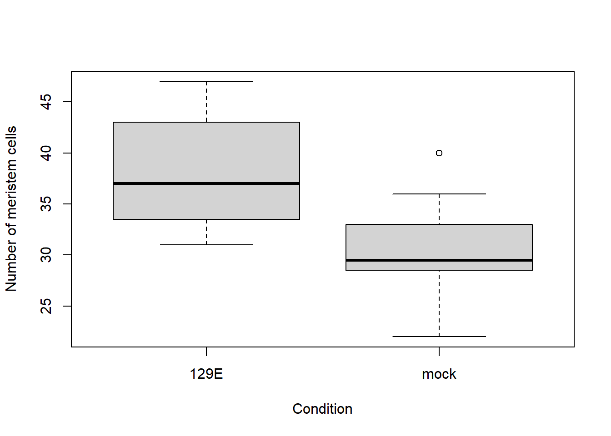
A t-test compares the means of two groups. It asks: if there was really no difference between the groups, how likely is a difference between the means as large as the one we see? This likelihood is the p-value. If it is smaller than 0.05, we usually call the difference statistically significant.
The t-test assumes that the values in each group come from a normal distribution. We will look at this in more detail below, but for now we check it with the Shapiro-Wilk test, once per group:
# test for normality in each group
col0 |>
group_by(Condition) |>
summarize(shapiro_p = shapiro.test(Meristem_cells)$p.value) |>
ungroup()shapiro.test() gives a list with several results, like t.test() in the chapter “Data objects”. With $p.value we take out only the p-value, and group_by() makes sure that we get one test per condition.
The Shapiro-Wilk test works the other way round: here, a p-value above 0.05 is what we want, because it means that there is no evidence against a normal distribution.
Now the t-test itself. The ~ reads as “depends on”: we test whether the number of meristem cells depends on the condition.
# compare mock and 129E in the wild type
t.test(Meristem_cells ~ Condition, data = col0)
Welch Two Sample t-test
data: Meristem_cells by Condition
t = 3.4714, df = 19.311, p-value = 0.002508
alternative hypothesis: true difference in means between group 129E and group mock is not equal to 0
95 percent confidence interval:
2.988992 12.041311
sample estimates:
mean in group 129E mean in group mock
38.18182 30.66667 The most important lines of the output are:
tandp-value: the test statistic and the p-value.95 percent confidence interval: the range in which the true difference between the two means probably lies.mean in group ...: the mean of each group.
By default, R runs the Welch version of the t-test, which does not assume that both groups have the same variance. That is why the title says “Welch Two Sample t-test”.
In our data, wild-type plants treated with 129E have on average 38.2 meristem cells, and mock plants 30.7. The difference is significant (p = 0.0025), and the confidence interval tells us that 129E adds roughly 3 to 12 cells. Both Shapiro-Wilk tests above gave p-values well above 0.05 (0.82 and 0.37), so we can use a t-test here.
If your data is clearly not normally distributed, you can use the Wilcoxon rank sum test (also called Mann-Whitney U test) instead. It does not compare the means, but uses the ranks of the values, so it does not need a normal distribution:
# a test that does not assume a normal distribution
wilcox.test(Meristem_cells ~ Condition, data = col0)Warning in wilcox.test.default(x = DATA[[1L]], y = DATA[[2L]], ...): cannot
compute exact p-value with ties
Wilcoxon rank sum test with continuity correction
data: Meristem_cells by Condition
W = 114, p-value = 0.003382
alternative hypothesis: true location shift is not equal to 0You may see a warning that R “cannot compute exact p-value with ties”. Ties are values that occur more than once, which is common for counts such as our cell numbers. R then calculates an approximate p-value instead, which is fine here. The Wilcoxon test comes to the same conclusion as the t-test (p = 0.003).
8.6 Checking for a normal distribution
Many statistical tests, such as the t-test and the ANOVA below, assume that the values in each group come from a normal distribution. It is important to check this per group: if you put all plants together, you mix groups with different means, and the combined data will not look normal even if every group is.
8.6.1 Density plots
A density plot is a smoothed version of a histogram. In ggplot2, geom_density() draws one curve per condition, and facet_wrap() makes one panel per genotype, as in the plotting chapter. geom_rug() adds a small tick at the bottom for each plant, so you can see where the actual values are:
ggplot(meristem, aes(x = Meristem_cells, color = Condition)) +
geom_density() +
geom_rug() +
facet_wrap(~ Genotype) +
scale_color_manual(values = c("129E" = "#2A6FDB", mock = "#8C8C8C")) +
labs(x = "Number of meristem cells")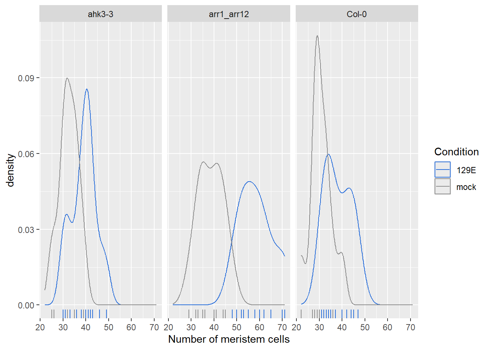
In all three genotypes, the curve of the 129E plants lies to the right of the mock curve, so treated plants tend to have more meristem cells. The shift is largest in arr1_arr12. Some curves have small bumps, for example Col-0 with 129E, but with only 11 to 15 plants per group, a density curve is never perfectly smooth.
8.6.2 Q-Q plots
A Q-Q plot (quantile-quantile plot) compares the values in a group with the values you would expect from a normal distribution. If the data is normally distributed, the points lie close to the diagonal line.
ggplot2 can draw Q-Q plots too, but here we use ggqqplot() from the ggpubr package, which we loaded above. ggpubr builds on ggplot2 and makes some common plots quicker to draw. Its Q-Q plot also adds a shaded band in the color of each group, which shows the range in which we would expect the points if the data was normally distributed. Note that ggpubr functions take the column names in quotes, and use facet.by instead of facet_wrap():
ggqqplot(meristem, x = "Meristem_cells",
color = "Condition", palette = c("#2A6FDB", "#8C8C8C"),
facet.by = "Genotype")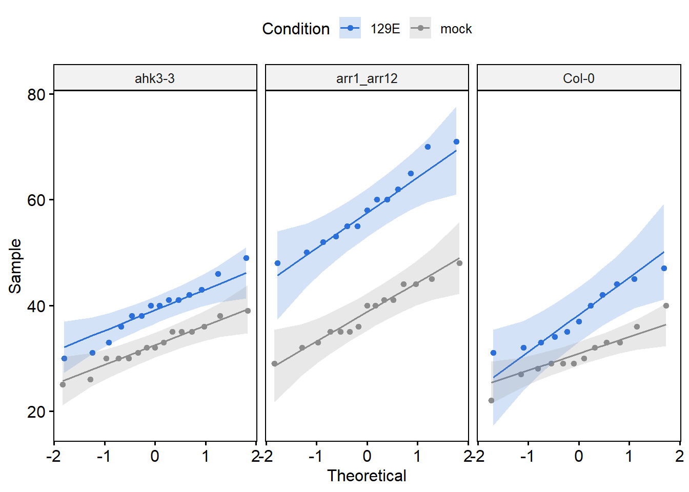
In all six groups, the points lie close to the line and inside the shaded band, so there is no sign of a strong deviation from a normal distribution.
8.6.3 Shapiro-Wilk test for each group
We already ran the Shapiro-Wilk test for the two wild-type groups. With group_by(), we can run it for all six combinations of genotype and condition at once:
# one Shapiro-Wilk test per genotype and condition
meristem |>
group_by(Genotype, Condition) |>
summarize(shapiro_p = shapiro.test(Meristem_cells)$p.value) |>
ungroup()`summarise()` has grouped output by 'Genotype'. You can override using the
`.groups` argument.The Shapiro-Wilk test checks the null hypothesis that the values come from a normal distribution. If the p-value is smaller than 0.05, we reject this hypothesis and should not assume a normal distribution.
In our data, all six p-values are between 0.37 and 0.87. None of the groups deviates significantly from a normal distribution, which fits what we saw in the plots.
Keep in mind that the result of the test depends on the number of values. With small groups like ours (11 to 15 plants), the test can easily miss a deviation from the normal distribution. With very large groups, it flags even tiny deviations that don’t matter in practice. So always look at the plots as well, not only at the p-value.
8.7 ANOVA
With a t-test we can compare two groups. Our data has six groups: three genotypes, each with and without 129E. To compare more than two groups, we use an analysis of variance (ANOVA).
Let’s first look at the data:
ggplot(meristem, aes(x = Genotype, y = Meristem_cells, color = Condition)) +
geom_boxplot() +
scale_color_manual(values = c("129E" = "#2A6FDB", mock = "#8C8C8C")) +
labs(y = "Number of meristem cells")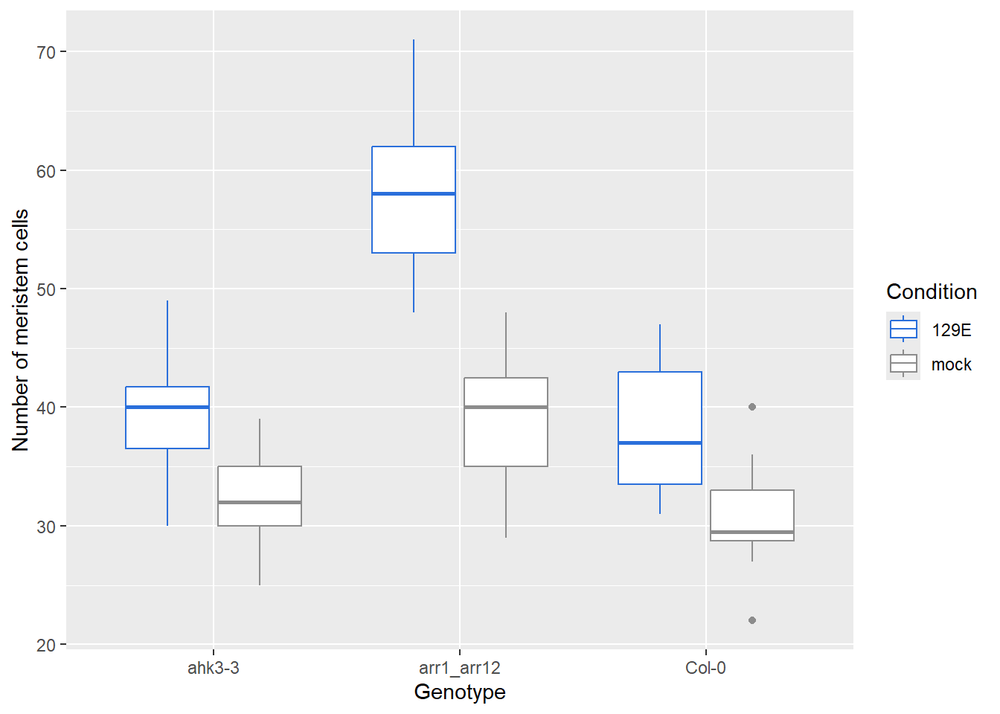
In every genotype, plants treated with 129E have more meristem cells than mock plants. The arr1_arr12 plants with 129E stand out, with clearly more cells than all other groups.
We start with an ANOVA that tests whether the number of meristem cells depends on the genotype and on the condition:
# two-way ANOVA, additive model
aov_add <- aov(Meristem_cells ~ Genotype + Condition, data = meristem)
summary(aov_add) Df Sum Sq Mean Sq F value Pr(>F)
Genotype 2 2958 1479.1 38.21 3.28e-12 ***
Condition 1 2646 2646.0 68.36 3.38e-12 ***
Residuals 76 2942 38.7
---
Signif. codes: 0 '***' 0.001 '**' 0.01 '*' 0.05 '.' 0.1 ' ' 1The output has one row per factor. Pr(>F) is the p-value, and the stars at the end of the row show how small it is (see the Signif. codes line).
Both the genotype and the condition have a significant effect on the number of meristem cells (both p < 0.001).
The model above is called an additive model. It assumes that the effect of 129E is the same in every genotype. But maybe 129E has a larger effect in one genotype than in another. This is called an interaction between the two factors. To include it, we replace the + by a *:
# Two-way ANOVA with interaction effect
# These two calls are equivalent
aov_int <- aov(Meristem_cells ~ Genotype * Condition, data = meristem)
aov_int <- aov(Meristem_cells ~ Genotype + Condition + Genotype:Condition, data = meristem)
# summarize the ANOVA
summary(aov_int) Df Sum Sq Mean Sq F value Pr(>F)
Genotype 2 2958.1 1479.1 49.83 1.96e-14 ***
Condition 1 2646.0 2646.0 89.14 2.45e-14 ***
Genotype:Condition 2 745.3 372.7 12.55 2.02e-05 ***
Residuals 74 2196.6 29.7
---
Signif. codes: 0 '***' 0.001 '**' 0.01 '*' 0.05 '.' 0.1 ' ' 1The new row Genotype:Condition tests the interaction. It is significant (p = 2e-05): the effect of 129E on the number of meristem cells depends on the genotype.
If the interaction is not significant, use the additive model. If it is significant, as here, keep the interaction in the model, and be careful with statements about the main effects alone: “129E increases the number of meristem cells” is then only part of the story, because the size of the effect depends on the genotype.
An interaction plot shows this well. Each line is one condition, and the points are the group means. If there is no interaction, the lines are roughly parallel:
interaction.plot(x.factor = meristem$Genotype, trace.factor = meristem$Condition,
response = meristem$Meristem_cells,
xlab = "Genotype", ylab = "Mean number of meristem cells", trace.label = "Condition")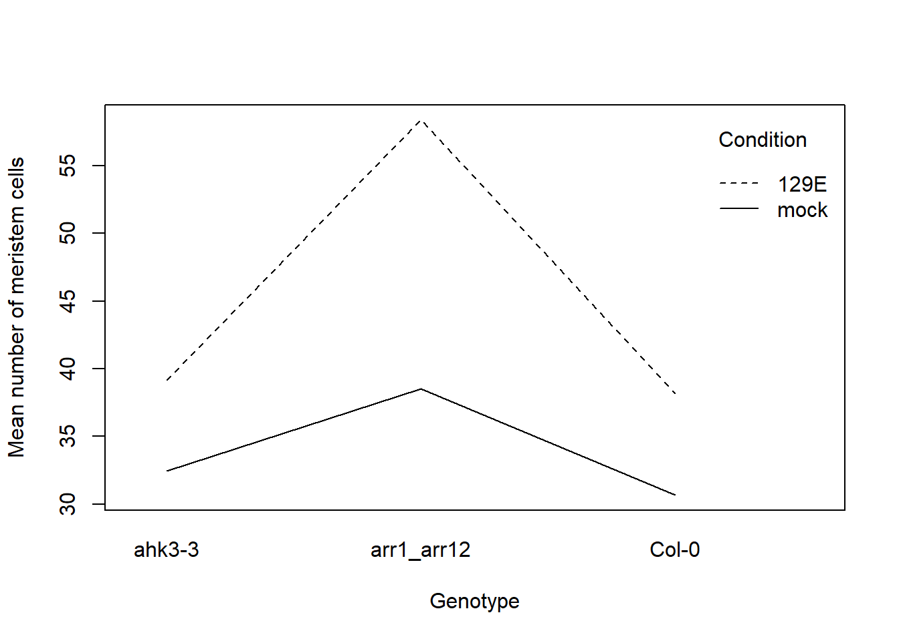
Here the lines are clearly not parallel. In arr1_arr12, 129E adds about 20 cells on average, in ahk3-3 and Col-0 only about 7.
8.8 Which groups differ? Tukey’s test
A significant ANOVA tells us that some group means differ, but not which ones. To find out, we compare all pairs of groups. Because we make many comparisons at the same time, the chance that at least one of them is significant just by chance becomes large. Tukey’s HSD (Honest Significant Differences) test corrects for this. It is a post-hoc test, which means that it is used after an ANOVA.
# compare all pairs of groups
TukeyHSD(aov_int) Tukey multiple comparisons of means
95% family-wise confidence level
Fit: aov(formula = Meristem_cells ~ Genotype + Condition + Genotype:Condition, data = meristem)
$Genotype
diff lwr upr p adj
arr1_arr12-ahk3-3 12.060345 8.607844 15.512845 0.0000000
Col-0-ahk3-3 -1.428786 -5.067208 2.209637 0.6173667
Col-0-arr1_arr12 -13.489130 -17.156178 -9.822083 0.0000000
$Condition
diff lwr upr p adj
mock-129E -11.51505 -13.94553 -9.08457 0
$`Genotype:Condition`
diff lwr upr p adj
arr1_arr12:129E-ahk3-3:129E 19.2417582 13.1022369 25.3812796 0.0000000
Col-0:129E-ahk3-3:129E -0.9610390 -7.3834481 5.4613701 0.9978852
ahk3-3:mock-ahk3-3:129E -6.6761905 -12.5996807 -0.7527003 0.0180753
arr1_arr12:mock-ahk3-3:129E -0.6095238 -6.5330140 5.3139664 0.9996550
Col-0:mock-ahk3-3:129E -8.4761905 -14.7469530 -2.2054279 0.0023220
Col-0:129E-arr1_arr12:129E -20.2027972 -26.7329888 -13.6726056 0.0000000
ahk3-3:mock-arr1_arr12:129E -25.9179487 -31.9581308 -19.8777666 0.0000000
arr1_arr12:mock-arr1_arr12:129E -19.8512821 -25.8914642 -13.8110999 0.0000000
Col-0:mock-arr1_arr12:129E -27.7179487 -34.0990557 -21.3368417 0.0000000
ahk3-3:mock-Col-0:129E -5.7151515 -12.0426642 0.6123612 0.0999201
arr1_arr12:mock-Col-0:129E 0.3515152 -5.9759975 6.6790278 0.9999836
Col-0:mock-Col-0:129E -7.5151515 -14.1688831 -0.8614200 0.0177130
arr1_arr12:mock-ahk3-3:mock 6.0666667 0.2462015 11.8871318 0.0360994
Col-0:mock-ahk3-3:mock -1.8000000 -7.9735355 4.3735355 0.9562146
Col-0:mock-arr1_arr12:mock -7.8666667 -14.0402022 -1.6931311 0.0048678The output has one block per factor. The last block, $Genotype:Condition, compares all six groups with each other. For each pair, diff is the difference between the means, lwr and upr give the 95% confidence interval of this difference, and p adj is the p-value, adjusted for the number of comparisons.
The comparisons we are most interested in are mock against 129E within the same genotype. All three are significant: ahk3-3 (p adj = 0.018), arr1_arr12 (p adj < 0.001) and Col-0 (p adj = 0.018). Without 129E, arr1_arr12 has slightly more cells than the other two genotypes (p adj = 0.036 against ahk3-3 and 0.005 against Col-0), while ahk3-3 and Col-0 do not differ (p adj = 0.96).
With six groups, this table is long. In figures, the result is often shown with letters instead: groups that share a letter are not significantly different. The HSD.test() function of the agricolae package does this. It needs one factor, so we first make a column that combines genotype and condition:
library(agricolae)
# one column with the six groups
meristem <- meristem |>
mutate(Group = paste(Genotype, Condition, sep = "_"))
# ANOVA with the six groups as one factor
aov_group <- aov(Meristem_cells ~ Group, data = meristem)
# Tukey test with letters
HSD.test(aov_group, "Group", group = TRUE, console = TRUE)
Study: aov_group ~ "Group"
HSD Test for Meristem_cells
Mean Square Error: 29.68326
Group, means
Meristem_cells std r se Min Max Q25 Q50 Q75
ahk3-3_129E 39.14286 5.375974 14 1.456102 30 49 36.50 40.0 41.75
ahk3-3_mock 32.46667 3.997618 15 1.406728 25 39 30.00 32.0 35.00
arr1_arr12_129E 58.38462 7.228860 13 1.511068 48 71 53.00 58.0 62.00
arr1_arr12_mock 38.53333 5.449334 15 1.406728 29 48 35.00 40.0 42.50
Col-0_129E 38.18182 5.671299 11 1.642704 31 47 33.50 37.0 43.00
Col-0_mock 30.66667 4.599078 12 1.572770 22 40 28.75 29.5 33.00
Alpha: 0.05 ; DF Error: 74
Critical Value of Studentized Range: 4.137591
Groups according to probability of means differences and alpha level( 0.05 )
Treatments with the same letter are not significantly different.
Meristem_cells groups
arr1_arr12_129E 58.38462 a
ahk3-3_129E 39.14286 b
arr1_arr12_mock 38.53333 b
Col-0_129E 38.18182 bc
ahk3-3_mock 32.46667 cd
Col-0_mock 30.66667 darr1_arr12 with 129E gets its own letter (a), so it differs from all other groups. Within each genotype, the mock and the 129E group share no letter, which matches the Tukey table above: 129E changes the number of meristem cells in all three genotypes.
8.9 Checking the assumptions of the ANOVA
Besides a normal distribution, the ANOVA assumes that all groups have a similar variance (homogeneity of variances). We can check both assumptions on the residuals of the model, i.e. the differences between each value and the mean of its group.
8.9.1 Homogeneity of variances
The residuals versus fitted values plot shows the residuals of each group (the fitted values are the group means). The spread of the points should be similar in all groups:
plot(aov_int, 1)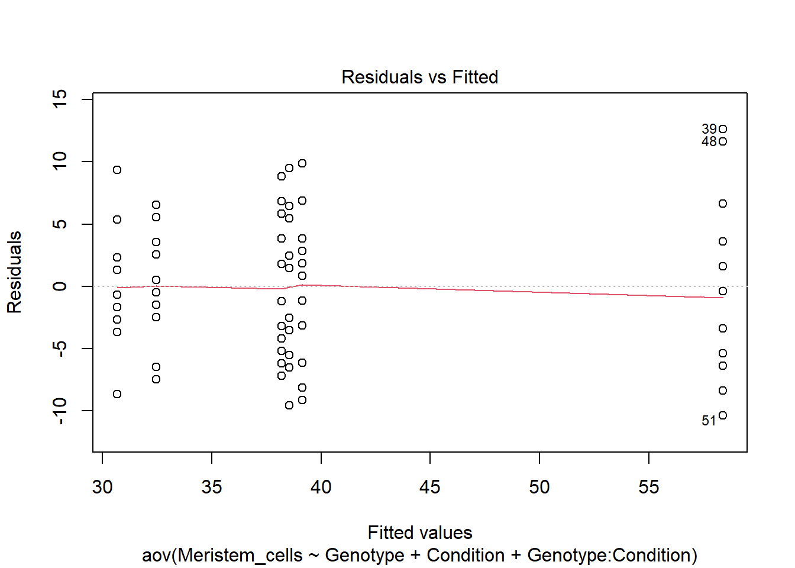
R labels the three most extreme values with their row numbers. In our data, the spread is similar in all six groups, and the red line stays close to 0. Plants 39, 48 and 51 are marked as the most extreme values, but they are not far away from the rest.
We can also test this with Levene’s test from the car package. Its null hypothesis is that all groups have the same variance, so here again a p-value above 0.05 is what we want:
library(car)
leveneTest(Meristem_cells ~ Genotype * Condition, data = meristem)With p = 0.30 there is no evidence that the variances differ between the groups.
8.9.2 Normality of the residuals
The Q-Q plot of the residuals should roughly follow the straight line:
plot(aov_int, 2)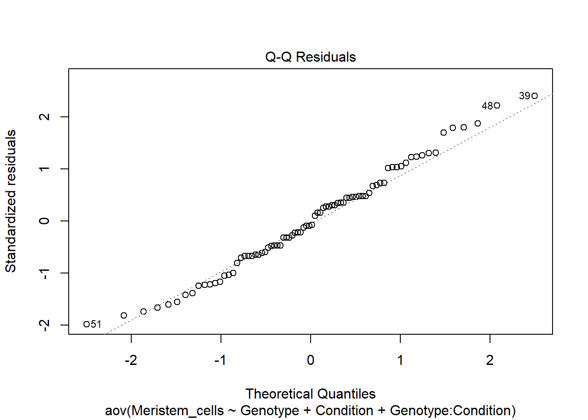
The points follow the line closely, with a small deviation at the upper end (plants 39 and 48). Together with Levene’s test, this means that the assumptions of the ANOVA are met for this dataset.
8.10 Exercise
The file Genotype_Rootlength.txt contains the root length (in mm) of plants from the same genotypes, with and without 129E.
- Read the file and check how many plants you have per genotype and condition.
- Does 129E change the root length of the wild type (
Col-0)? Use a t-test. - Run a two-way ANOVA with an interaction. Is the interaction significant?
- Check the assumptions with Levene’s test. What do you notice?
TipSolution
# 1. read the data and count the plants
genotype_root <- read_tsv("data/Genotype_Rootlength.txt")Rows: 143 Columns: 3
── Column specification ────────────────────────────────────────────────────────
Delimiter: "\t"
chr (2): Genotype, Condition
dbl (1): Rootlength
ℹ Use `spec()` to retrieve the full column specification for this data.
ℹ Specify the column types or set `show_col_types = FALSE` to quiet this message.genotype_root |>
count(Genotype, Condition)# 2. t-test for the wild type
col0_root <- genotype_root |>
filter(Genotype == "Col-0")
t.test(Rootlength ~ Condition, data = col0_root)
Welch Two Sample t-test
data: Rootlength by Condition
t = 2.2912, df = 34.99, p-value = 0.02809
alternative hypothesis: true difference in means between group 129E and group mock is not equal to 0
95 percent confidence interval:
0.5924654 9.8066013
sample estimates:
mean in group 129E mean in group mock
42.85833 37.65880 # 3. two-way ANOVA with interaction
aov_root <- aov(Rootlength ~ Genotype * Condition, data = genotype_root)
summary(aov_root) Df Sum Sq Mean Sq F value Pr(>F)
Genotype 2 12129 6064 68.67 < 2e-16 ***
Condition 1 4865 4865 55.08 1.10e-11 ***
Genotype:Condition 2 1969 984 11.15 3.27e-05 ***
Residuals 137 12099 88
---
Signif. codes: 0 '***' 0.001 '**' 0.01 '*' 0.05 '.' 0.1 ' ' 1# 4. Levene's test
leveneTest(Rootlength ~ Genotype * Condition, data = genotype_root)As for the meristem cells, 129E has a significant effect on the root length of the wild type (p = 0.028), and the interaction between genotype and condition is significant (p = 3e-05). But this time, Levene’s test is significant too (p = 0.008): the variances are not the same in all groups, so one assumption of the ANOVA is not met. With groups of similar size, the ANOVA is usually still fairly reliable, but you should mention this when you report the result. An alternative is a test that does not assume equal variances, for example Welch’s ANOVA with oneway.test().
Cumming, Geoff, Fiona Fidler, and David L. Vaux. 2007. “Error Bars in Experimental Biology.” Journal of Cell Biology 177 (1): 7–11. https://doi.org/10.1083/jcb.200611141.
Garrido-Oter, Ruben, Ryohei Thomas Nakano, Nina Dombrowski, Ka-Wai Ma, Alice C. McHardy, and Paul Schulze-Lefert. 2018. “Modular Traits of the Rhizobiales Root Microbiota and Their Evolutionary Relationship with Symbiotic Rhizobia.” Cell Host & Microbe 24 (1): 155–167.e5. https://doi.org/10.1016/j.chom.2018.06.006.
Krzywinski, Martin, and Naomi Altman. 2013. “Points of Significance: Error Bars.” Nature Methods 10 (10): 921–22. https://doi.org/10.1038/nmeth.2659.